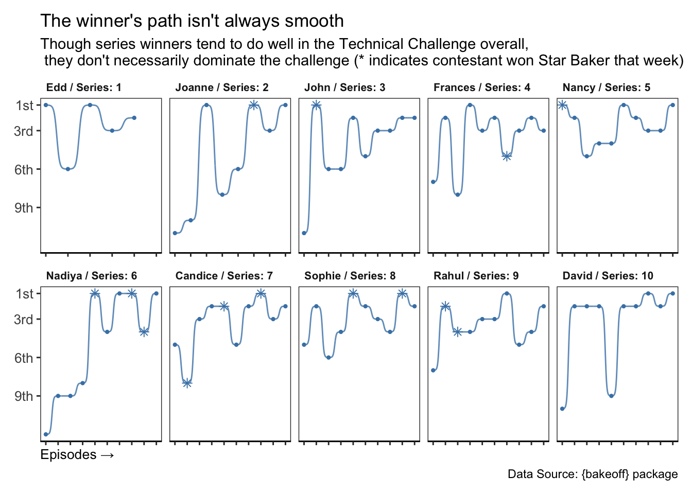

Code
#remotes::install_github("apreshill/bakeoff")
library("bakeoff")
library("dplyr")
library("ggplot2")
#library("plotly")
library("stringr")
library("tidyverse")
library("gganimate")
library("ggbump")
The Great British Bake Off is a multi-week amateur baking competition/show that first aired in 2010. For those unfamiliar with the show’s setup, Wikipedia summarizes it well (The Great British Bake Off 2025):
“A group of amateur bakers compete against each other in a series of rounds, attempting to impress two judges with their baking skills. One contestant is eliminated in each round, and the winner is selected from the three contestants who reach the final. In each episode, the amateur bakers are given three challenges based on that week’s theme: a signature bake, a technical challenge, and a show-stopper:
Signature Challenge
This challenge is for the amateur bakers to show off their tried-and-tested recipes for bakes they might make for their friends and family.
Technical Challenge
This challenge requires enough technical knowledge and experience to produce a certain finished product when given only limited – or even minimal – instructions. The bakers are all given the same recipe and are not told beforehand what the challenge will be. The finished products are judged blind and ranked from worst to best. They place their bakes behind the person’s photo.
Showstopper Challenge
This challenge is for the bakers to show off their skills and talent. The judges favour a bake that has a professional appearance but is also outstanding in flavours.”
As we watch the season (or series, as the British say) unfold, it’s fun to try to predict how contestants will do each week – will your favorite be eliminated, be safe until next week, or maybe even be recognized as Star Baker for the week?
As far as the audience knows, the judges don’t have a formal weighting of the three challenges when they choose who will be eliminated, but viewers have noticed that the Technical Challenge seems to be significant in determining how a baker will do.
Here, we explore the question of how Techinical Challenge results relate to bakers’ overall outcomes on the show. Our intended audience is fans of the show and those who enjoy digging deeper into light-hearted datasets.
This analysis looks at data from 10 seasons of the Great British Bake Off and aims to answer the question of what role the Technical Challenge plays in contestants’ overall success on the show.
The data we will use comes from the R package {bakeoff}, created “to enable data wrangling, analysis, and visualizations with R using data from “The Great British Bake Off” (Hill, Ismay, and Iannone 2022). This package was featured in the Tidy Tuesday series from the Data Science Learning community on October 25, 2022 (Community 2024).
The dataset contains data from Series 1-10 of the Great British Bake Off in 3 dataframes, bakers, challenges, and episodes. A data dictionary can be found via Tidy Tuesday.
#remotes::install_github("apreshill/bakeoff")
library("bakeoff")
library("dplyr")
library("ggplot2")
#library("plotly")
library("stringr")
library("tidyverse")
library("gganimate")
library("ggbump")We’ll be focusing only on two of the dataframes, bakers and challenges, which can can glimpse below:
#View(bakers)
#View(challenges)
#View(episodes)
glimpse(bakers)Rows: 120
Columns: 24
$ series <dbl> 1, 1, 1, 1, 1, 1, 1, 1, 1, 1, 2, 2, 2, 2, 2,…
$ baker <chr> "Annetha", "David", "Edd", "Jasminder", "Jon…
$ star_baker <int> 0, 0, 0, 0, 0, 0, 0, 0, 0, 0, 0, 0, 0, 0, 0,…
$ technical_winner <int> 0, 0, 2, 0, 1, 0, 0, 0, 2, 0, 1, 2, 0, 1, 1,…
$ technical_top3 <int> 1, 1, 4, 2, 1, 0, 0, 0, 4, 2, 3, 5, 1, 1, 2,…
$ technical_bottom <int> 1, 3, 1, 2, 2, 1, 1, 0, 1, 2, 1, 3, 2, 6, 3,…
$ technical_highest <dbl> 2, 3, 1, 2, 1, 10, 4, NA, 1, 2, 1, 1, 2, 1, …
$ technical_lowest <dbl> 7, 8, 6, 5, 9, 10, 4, NA, 8, 5, 5, 6, 10, 8,…
$ technical_median <dbl> 4.5, 4.5, 2.0, 3.0, 6.0, 10.0, 4.0, NA, 3.0,…
$ series_winner <int> 0, 0, 1, 0, 0, 0, 0, 0, 0, 0, 0, 0, 0, 0, 0,…
$ series_runner_up <int> 0, 0, 0, 0, 0, 0, 0, 0, 0, 0, 0, 0, 0, 0, 0,…
$ total_episodes_appeared <dbl> 2, 4, 6, 5, 3, 1, 2, 1, 6, 6, 4, 8, 3, 7, 5,…
$ first_date_appeared <date> 2010-08-17, 2010-08-17, 2010-08-17, 2010-08…
$ last_date_appeared <date> 2010-08-24, 2010-09-07, 2010-09-21, 2010-09…
$ first_date_us <date> NA, NA, NA, NA, NA, NA, NA, NA, NA, NA, NA,…
$ last_date_us <date> NA, NA, NA, NA, NA, NA, NA, NA, NA, NA, NA,…
$ percent_episodes_appeared <dbl> 33.33333, 66.66667, 100.00000, 83.33333, 50.…
$ percent_technical_top3 <dbl> 50.00000, 25.00000, 66.66667, 40.00000, 33.3…
$ baker_full <chr> "Annetha Mills", "David Chambers", "Edward \…
$ age <dbl> 30, 31, 24, 45, 25, 51, 44, 48, 37, 31, 31, …
$ occupation <chr> "Midwife", "Entrepreneur", "Debt collector f…
$ hometown <chr> "Essex", "Milton Keynes", "Bradford", "Birmi…
$ baker_last <chr> "Mills", "Chambers", "Kimber", "Randhawa", "…
$ baker_first <chr> "Annetha", "David", "Edward", "Jasminder", "…glimpse(challenges)Rows: 1,136
Columns: 7
$ series <int> 1, 1, 1, 1, 1, 1, 1, 1, 1, 1, 1, 1, 1, 1, 1, 1, 1, 1, 1, 1…
$ episode <int> 1, 1, 1, 1, 1, 1, 1, 1, 1, 1, 2, 2, 2, 2, 2, 2, 2, 2, 2, 2…
$ baker <chr> "Annetha", "David", "Edd", "Jasminder", "Jonathan", "Louis…
$ result <chr> "IN", "IN", "IN", "IN", "IN", "IN", "IN", "IN", "OUT", "OU…
$ signature <chr> "Light Jamaican Black Cakewith Strawberries and Cream", "C…
$ technical <int> 2, 3, 1, NA, 9, NA, 8, NA, 10, NA, 8, 6, 2, 1, 3, 5, 7, 4,…
$ showstopper <chr> "Red, White & Blue Chocolate Cake with Cigarellos, Fresh F…#glimpse(episodes)Viewers have the sense that performance in the Technical Challenge correlates with overall contestant outcome. To check this intuition, we look at Technical Challenge outcomes for all contestants across the 10 seasons, and we see that Technical Challenge outcomes are indeed positively correlated with overall outcome.
#remove contestant for all episodes after they have been eliminated
challenges_filtered <- challenges %>%
drop_na(technical, result)
# Rename result labels for broader understandability
challenges_filtered <- challenges_filtered %>%
mutate(outcome_broad = case_when(
result == "STAR BAKER" ~ "Star Baker",
result == "OUT" ~ "Eliminated",
result == "IN" ~ "Safe",
result == "WINNER" ~ "Winner",
# result == "RUNNER-UP" ~ "Runner-Up",
TRUE ~ NA_character_
)) %>%
filter(!is.na(outcome_broad))
# How does technical ranking relate to outcome category?
ggplot(challenges_filtered, aes(x = outcome_broad, y = technical)) +
geom_boxplot(fill = "steelblue") +
scale_y_reverse(breaks = c(1, 3, 6, 9, 13),
labels = c("1st", "3rd", "6th", "9th", "13th")) +
coord_cartesian(clip = "off", expand = FALSE) +
labs(
title = "Success in the Technical Challenge is correlated with better outcomes",
subtitle = "Across all series and contestants, strong technical bakers have better overall outcomes",
caption = "Data Source: {bakeoff} package",
x = "Episode Outcome",
y = "Technical Challenge Ranking"
) +
theme_minimal()
To better understand how the most successful contestants perform in the Technical Challenge, we can look each the performance of each series’ winner across all episodes of their series, looking at both their Technical Challenge ranking and any Star Baker recognition. We see that winners tend to do well in this challenge, generally ranking 5th or better, but they have ups and downs.
It’s important to note that Star Baker is a subjective award from the judges that takes into account performance across all three challenges. Technical Challenge ranking contributes to their decision, but the exact criteria may vary with week or series.
Series 1 had six episodes, and Series 2 had eight episodes. All other series had 10 episodes.
#how has the winner done in technical challenges over the series?
# filter for winners, join dfs bakers and challenges
winners_only <- bakers %>%
filter(series_winner == 1) %>%
left_join(episodes, by = "series") %>%
mutate(star_baker = str_detect(baker, sb_name),
star_baker = ifelse(is.na(star_baker), FALSE, star_baker),
baker_label = paste(baker, "/ Series:", series)) %>%
select(series, episode, baker, baker_label, star_baker) %>%
left_join(challenges, by = c("baker", "series", "episode"))
ggplot(data = winners_only, mapping = aes(x = episode, y = technical)) +
#geom_line(size = 0.5, alpha = 0.8, color = "steelblue") +
geom_point(data = winners_only %>% filter(!star_baker),
size = 0.8,
color = "steelblue") +
geom_bump(size = 0.5, alpha = 0.8, color = "steelblue") +
geom_point(data = winners_only %>% filter(star_baker),
mapping = aes(shape = star_baker),
size = 2,
color = "steelblue") +
scale_y_reverse(breaks = c(1, 3, 6, 9, 13),
labels = c("1st", "3rd", "6th", "9th", "13th")) +
scale_x_continuous(breaks = seq(1, 10, 1)) +
scale_shape_manual(values = 8, limits = c(TRUE), labels = c("Star Baker")) +
guides(shape = "none") +
facet_wrap(~ reorder(baker_label, series),
scale = "free_x",
nrow = 2) +
#coord_cartesian(clip = "off", expand = FALSE) +
labs(title = "The winner's path isn't always smooth",
subtitle = "Though series winners tend to do well in the Technical Challenge overall,\n they don't necessarily dominate the challenge (* indicates contestant won Star Baker that week)",
caption = "Data Source: {bakeoff} package",
x = "Episodes →",
y = "Technical Challenge Ranking") +
theme_bw() +
theme(axis.line.y = element_blank(),
axis.line.x = element_line(color = "black", size = 0.5),
axis.text.y = element_text(size = 10, hjust = 1),
axis.text.x = element_blank(),
axis.title.x = element_text(size = 10, hjust = 0),
#axis.title.y = element_blank(),
strip.background = element_blank(),
strip.text = element_text(size = 8, hjust = 0, face = "bold"),
panel.grid = element_blank(),
plot.margin = margin(10, 10, 10, 10)
)
Knowing that the winner doesn’t necessarily finish on top in this challenge every episode, we want to look at how other contestants, grouped by their series, do in the challenge as well.
This plot is animated to show each contestant’s trajectory, with a dot marking the “endpoint” of their time on the show. While the series winner doesn’t always rank first, a last-place ranking often means the end of the journey, and elimination that week, for a contestant.
In Series 1 - Episode 1, BBC did not air the judges’ discussion of all the Technical Challenge rankings; viewers only learned the top 3 and bottom 3 contestants. For the Series 1 contestants that fell in the middle, our graph starts with their ranking for Episode 2.
# account for bakers with same first name across multiple series
tech_results <- challenges_filtered %>%
mutate(
baker = fct_reorder(baker, series),
baker_unique = paste(baker,series)
)
ggplot(tech_results, aes(x = episode, y = technical, group = baker_unique, color=series)) +
geom_line(alpha = 0.6) +
geom_point() +
scale_y_reverse(breaks = c(1, 3, 6, 9, 13),
labels = c("1st", "3rd", "6th", "9th", "13th")) +
scale_x_continuous(breaks = seq(1, 10, 1)) +
facet_wrap(~series, scales = "free_x") +
labs(
title = "Technical challenge rankings for all contestants, by series",
subtitle = "A last place finish in the Technical Challenge often means elimination that week",
caption = "Data Source: {bakeoff} package",
x = "Episodes →",
y = "Technical Challenge Ranking"
) +
theme_minimal() +
theme(legend.position = "none", axis.title.x = element_text(size = 10, hjust = 0)) +
transition_reveal(along=episode)
Here, we have used data from Series 1-10 of The Great British Bake Off to explore the question of how performance in the Technical Challenge relates to overall performance on the show. While this is only one of three baking challenges on the show, we see that it positively correlates with contestant outcomes. Winners of each series tend to do well throughout the series in this Challenge, though they don’t rank first every week. On the other end of the rankings, a poor showing in this Challenge is often followed by elimination that week.
A deeper analysis might explore the other two baking challenges as well. Their outcomes were not well documented in this dataset, but the information could be useful in understanding baker performance more holistically. Overall, Technical Challenge rankings appear to play an important role in Bake Off results, but the relationship has just enough unpredictability to keep viewers guessing.
dplyr: filter(), mutate(), select(), left_join()
tidyr: drop_na()
forcats: fct_reorder()
stringr: str_detect()
ggplot2: geom_boxplot(), geom_line(), geom_point(), facet_wrap()
ggbump geom_bump()
options(width = 120)
sessioninfo::session_info()─ Session info ───────────────────────────────────────────────────────────────────────────────────────────────────────
setting value
version R version 4.5.1 (2025-06-13)
os macOS Ventura 13.6.6
system x86_64, darwin20
ui X11
language (EN)
collate en_US.UTF-8
ctype en_US.UTF-8
tz America/New_York
date 2025-11-09
pandoc 3.6.3 @ /Applications/quarto/bin/tools/ (via rmarkdown)
quarto 1.8.25 @ /usr/local/bin/quarto
─ Packages ───────────────────────────────────────────────────────────────────────────────────────────────────────────
package * version date (UTC) lib source
bakeoff * 0.2.0.9000 2025-11-04 [1] Github (apreshill/bakeoff@00fdf4d)
cli 3.6.5 2025-04-23 [1] CRAN (R 4.5.0)
crayon 1.5.3 2024-06-20 [1] CRAN (R 4.5.0)
digest 0.6.37 2024-08-19 [1] CRAN (R 4.5.0)
dplyr * 1.1.4 2023-11-17 [1] CRAN (R 4.5.0)
evaluate 1.0.5 2025-08-27 [1] CRAN (R 4.5.1)
farver 2.1.2 2024-05-13 [1] CRAN (R 4.5.0)
fastmap 1.2.0 2024-05-15 [1] CRAN (R 4.5.0)
forcats * 1.0.1 2025-09-25 [1] CRAN (R 4.5.1)
generics 0.1.4 2025-05-09 [1] CRAN (R 4.5.0)
gganimate * 1.0.11 2025-09-04 [1] CRAN (R 4.5.1)
ggbump * 0.1.0 2020-04-24 [1] CRAN (R 4.5.0)
ggplot2 * 4.0.0 2025-09-11 [1] CRAN (R 4.5.1)
glue 1.8.0 2024-09-30 [1] CRAN (R 4.5.0)
gtable 0.3.6 2024-10-25 [1] CRAN (R 4.5.0)
hms 1.1.4 2025-10-17 [1] CRAN (R 4.5.1)
htmltools 0.5.8.1 2024-04-04 [1] CRAN (R 4.5.0)
htmlwidgets 1.6.4 2023-12-06 [1] CRAN (R 4.5.0)
jsonlite 2.0.0 2025-03-27 [1] CRAN (R 4.5.0)
knitr 1.50 2025-03-16 [1] CRAN (R 4.5.0)
labeling 0.4.3 2023-08-29 [1] CRAN (R 4.5.0)
lifecycle 1.0.4 2023-11-07 [1] CRAN (R 4.5.0)
lubridate * 1.9.4 2024-12-08 [1] CRAN (R 4.5.0)
magick 2.9.0 2025-09-08 [1] CRAN (R 4.5.1)
magrittr 2.0.4 2025-09-12 [1] CRAN (R 4.5.1)
pillar 1.11.1 2025-09-17 [1] CRAN (R 4.5.1)
pkgconfig 2.0.3 2019-09-22 [1] CRAN (R 4.5.0)
prettyunits 1.2.0 2023-09-24 [1] CRAN (R 4.5.0)
progress 1.2.3 2023-12-06 [1] CRAN (R 4.5.0)
purrr * 1.1.0 2025-07-10 [1] CRAN (R 4.5.1)
R6 2.6.1 2025-02-15 [1] CRAN (R 4.5.0)
RColorBrewer 1.1-3 2022-04-03 [1] CRAN (R 4.5.0)
Rcpp 1.1.0 2025-07-02 [1] CRAN (R 4.5.1)
readr * 2.1.5 2024-01-10 [1] CRAN (R 4.5.0)
rlang 1.1.6 2025-04-11 [1] CRAN (R 4.5.0)
rmarkdown 2.30 2025-09-28 [1] CRAN (R 4.5.1)
S7 0.2.0 2024-11-07 [1] CRAN (R 4.5.0)
scales 1.4.0 2025-04-24 [1] CRAN (R 4.5.0)
sessioninfo 1.2.3 2025-02-05 [1] CRAN (R 4.5.0)
stringi 1.8.7 2025-03-27 [1] CRAN (R 4.5.0)
stringr * 1.5.2 2025-09-08 [1] CRAN (R 4.5.1)
tibble * 3.3.0 2025-06-08 [1] CRAN (R 4.5.0)
tidyr * 1.3.1 2024-01-24 [1] CRAN (R 4.5.0)
tidyselect 1.2.1 2024-03-11 [1] CRAN (R 4.5.0)
tidyverse * 2.0.0 2023-02-22 [1] CRAN (R 4.5.0)
timechange 0.3.0 2024-01-18 [1] CRAN (R 4.5.0)
tweenr 2.0.3 2024-02-26 [1] CRAN (R 4.5.0)
tzdb 0.5.0 2025-03-15 [1] CRAN (R 4.5.0)
vctrs 0.6.5 2023-12-01 [1] CRAN (R 4.5.0)
withr 3.0.2 2024-10-28 [1] CRAN (R 4.5.0)
xfun 0.53 2025-08-19 [1] CRAN (R 4.5.1)
yaml 2.3.10 2024-07-26 [1] CRAN (R 4.5.0)
[1] /Library/Frameworks/R.framework/Versions/4.5-x86_64/Resources/library
* ── Packages attached to the search path.
──────────────────────────────────────────────────────────────────────────────────────────────────────────────────────